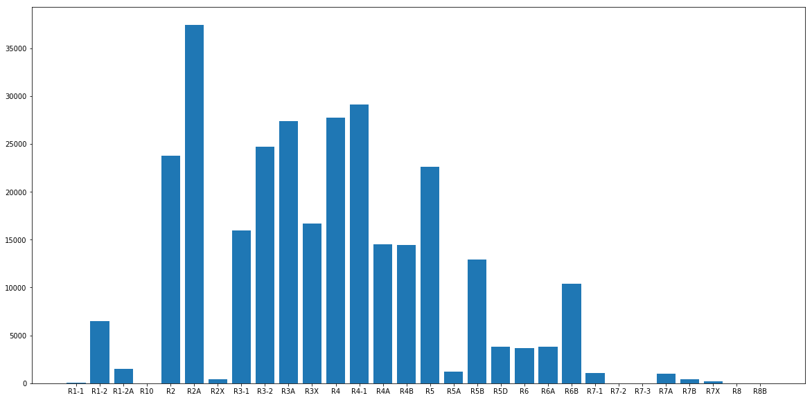
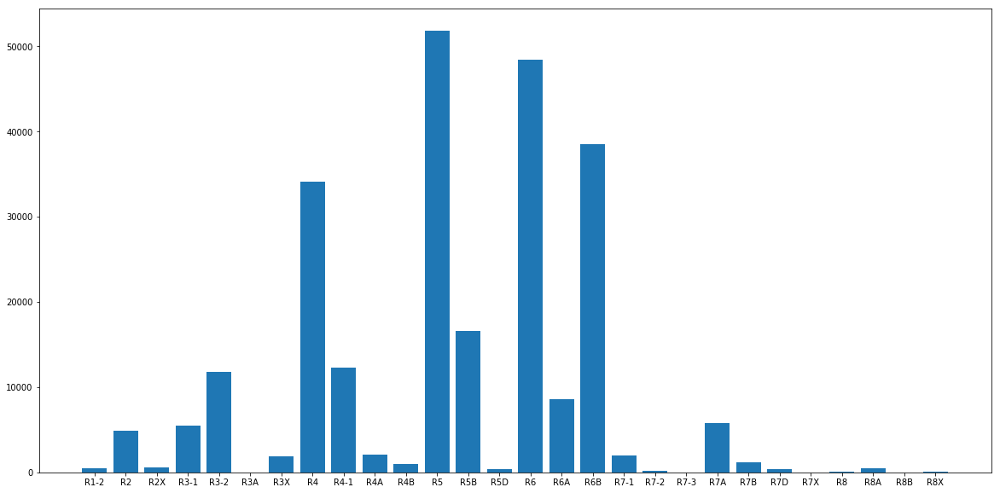
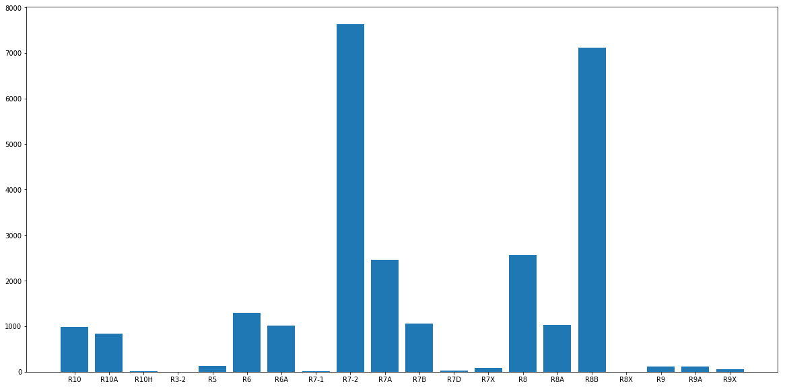
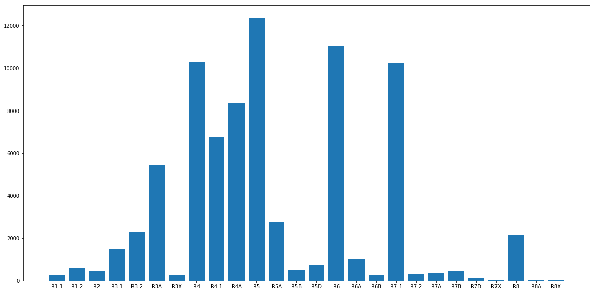
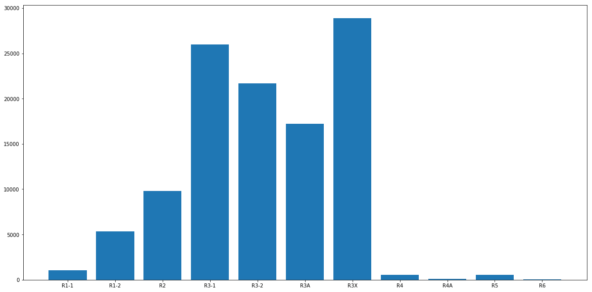

Zoning Laws and the Housing Market
By Robert Bangiyev
Link: https://robertbangiyev.github.io/ZoningandHousing/
First Dataset
Second Dataset
Work Completed:
- Completed cleaning the first dataset by getting rid of all rows with a 0 for the year
- Filtered the dataset to only deal with the residential districts (R1, R2, etc) for part of my analysis
- Completed analyzing the dataset, where I noticed the differences in buildings built per zoning district. In Manhattan, for example, most units were built in areas where the district has R7-2 and R8B zoning. In Staten Island, in comparison, most units were built in districts zoned for R5 or below.
- Completed bar graphs to display the results of the analysis above
Queens:

Brooklyn:

Manhattan:

Bronx:

Staten Island:

Work Planned:
- I plan on doing further analysis on the first dataset to see how the number of buildings changed for each zone type over time and see how the number of buildings being built changed after a zoning regulation was implemented
- I plan on using predictive models from sklearn to predict the number of buildings which will be built per year in a district given the zoning regulation
- I plan on analyzing the second dataset to see how the average sale price changed for each district for each zone type, over time. However, I noticed that the dataset only has values going back to 2003, which is a problem, as the first dataset I’m working with goes back to the early 1900s and has most of its data from before 2003. If I do not find a better dataset, I must either drop it and focus strictly on the first dataset, come up with a better idea and dataset to go along with the first one, or just stick with this dataset and only focus on data after 2003 for the first dataset. If I end up using this dataset or finding a better one which shows property sales going back to the 1900s, I will:
- Find the average sales by district (or ZIP code)
- Find the average sales over time for a specific district which underwent changes in zoning
- Create a visualization showing both
- Create a visualization comparing the number of units built over time to the average sale price for over time
- Use Linear Regression to predict the average sales of a district given the number of buildings and the zoning regulation